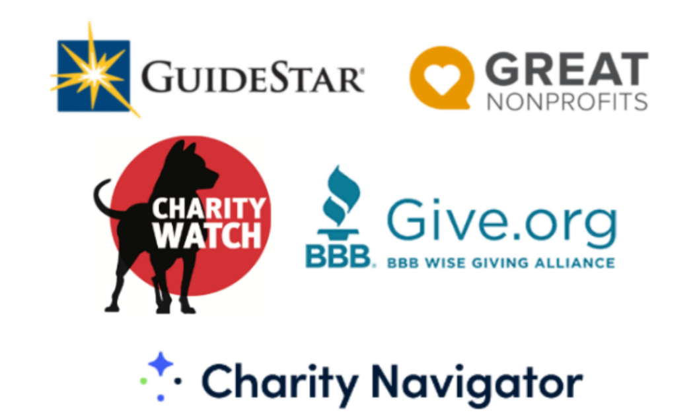

We all have our suspicions when donating to nonprofits. We ask ourselves questions like “How is my donation going to be spent by charities?”, “Is my donation going to truly help people?”, and “How do I know my donation isn’t sitting in some big executive’s pocket?”
So rather than sitting around and hoping that our suspicions are eliminated with wishes and ignorance, let’s extinguish our concerns!
The world of nonprofits in the U.S. is monitored by government agencies and private institutions that receive authentic information about the practices of every nonprofit in the country, so long as that nonprofit has a 501(c)(3) status. 501(c)(3) status signifies that a company is subject to tax exemptions as they are acting purely in the benefit of society. This status is vital as it means the IRS has accurate information about the revenues and expenses of the company, and private organizations will have an easier time evaluating the company.
Donating to companies that don't have a 501(c)(3) status is risky since they aren't monitored by government agencies as closely and there is no guarantee your contribution is being spent in a way that supports the company's supposed cause.
Now that we are aware of the external oversight of government agencies and private institutions on nonprofits, let’s shift our focus to utilizing these resources to help eliminate our suspicions as donors.
Research Tools are typically nonprofits dedicated to easing the donor experience for impactful contributions. The newfound impact of contributions is found through the reliability of research data obtained by research tools. To access these tools, all a donor needs to do is to search for the charity they are looking to donate to on a research tool’s search bar, and the data that populates the following page should include an evaluation of the company in terms of efficiency, a numerical rating, and other data for further research such as 990 forms (covered soon).
Popular research tools: Charity Navigator, Guidestar, Charity Watch, Greatnonprofits, and the BBB Wise Giving Guide.
Many of the organizations you look to donate to will have awards associated with trusted third parties that have ensured their behavior to provide authenticity. When you see one of these awards, your suspicions should be alleviated, as it likely means that the charity is working extremely efficiently towards its goal.
Popular awards include Candid by Guidestar, GreatNonprofits Top-Rated Nonprofit, and Roosevelt Institute’s Reimagine The Rules. These awards are few of many, but before accepting awards for their face value, ensure the reputability of the distributors of the award with a few internet searches.
In-depth research of target nonprofits may seem like a waste of time, but the benefits of doing so present themselves in the long term. There are numerous ways to research charities. In doing so you will familiarize yourself with the financial and social intricacies and challenges across the entire industry. The primary methods of personal research include:
1. Directly contact the nonprofit you are researching: This is an approach that develops personal connections to nonprofits via email or phone calls. You can make inquiries to accredited charity employees to better assess their capabilities and dedication to the goal. Asking questions will allow you to better scope the authenticity of the charity, and verifying these answers with research should eliminate all donation suspicion.
2. Government-provided information: The IRS has a massive database of all 990 forms for each registered 501(c)(3), which helps donors and data organizations gain insight into the revenues and expenses of nonprofits. These 990 forms typically include the dollar values for each stream revenue and expense category that each nonprofit has, and familiarizing yourself with the meanings of each tag will allow you to analyze their efficiency for yourself. Although this may seem tedious, it is an impressive skill to read and provide insight into financial documents, and this process can only help achieve that valuable skill.
3. Third-party Journals: Most nonprofits will have numerous blogs with publications about various aspects of the endeavors or internal affairs of the organizations. Reading through these blogs will provide you with objective insight into the capabilities and success of the nonprofit. The objectivity of these journals is essential, but once established, the information in these blogs can be accurately used to evaluate the efficiency of the charity, empowering your donation.